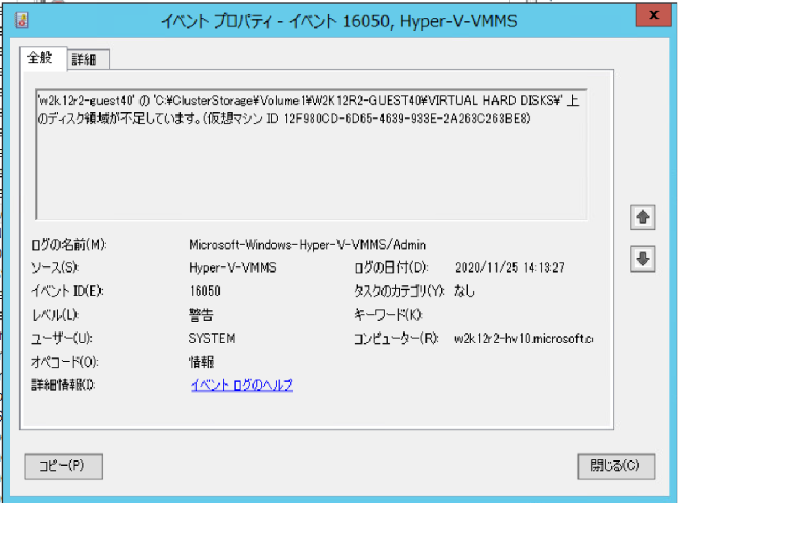
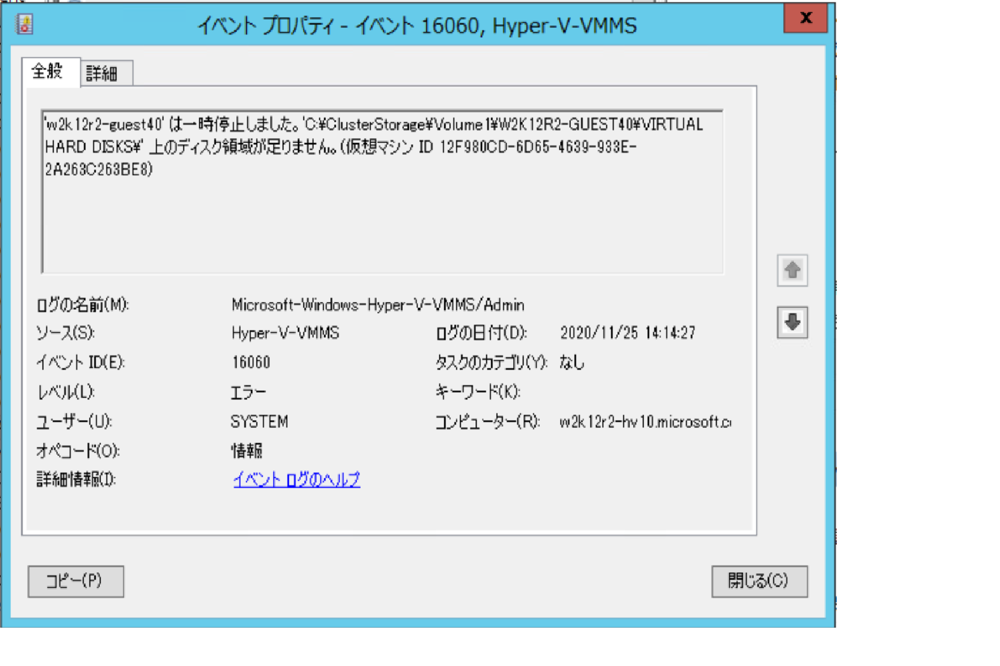
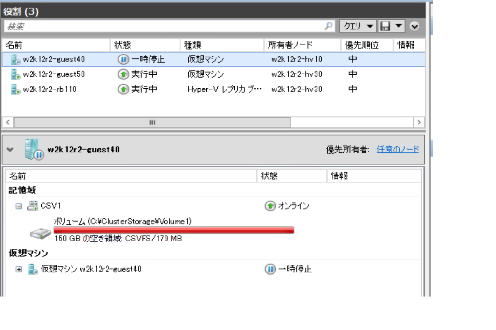

みなさん、こんにちは。Windows サポート Storage & High Availability チームの永岡です。本ブログでは Windows Server 2012 R2 の Hyper-V 環境を運用いただく際のボリューム管理 (容量管理) に役立つ情報をご紹介したいと思います。
Windows Server 2016/2019 については一部動作が異なりますので、後半部分に少しご案内させていただきつつ、ここでは Windows Server 2012 R2 を中心にご紹介します。
多くの環境で既に Windows Server 2012 R2 Hyper-V Cluster や、スタンドアローンの Hyper-V サーバーを構築いただいている事と思いますが、Hyper-V 機能を利用して仮想マシンを作成・構成した際には、仮想マシン管理サービス (通称 VMMS サービス) が各仮想マシン プロセスを管理する形となります。
また VMMS サービスの管理対象は、仮想マシン プロセスだけでなく、定期的 (60 秒毎) に仮想マシンで利用されるストレージ領域の容量チェックも実施しています。Hyper-V Cluster の場合には CSV ボリュームがストレージ領域となり、スタンドアローン の場合には、既定もしくは任意で設定いただいた各仮想マシンの .vhdx 置き場がこの領域に該当しますが、もし対象のストレージ領域が 2GB 未満となっていた場合には、以下の警告イベントが出力されます。

またさらに 60 秒間隔のチェック時に、ストレージ領域の残容量が 2GB を下回っており、かつ 200 MB
未満の場合には、以下のエラー イベントが出力されて、仮想マシンが一時停止されます。


ここで 1 つ注意が必要ですが、上記のエラーが発生して対象ストレージ領域上で動作する仮想マシンが一時停止した後、該当領域の空き容量が回復した場合にも、仮想マシンは “一時停止” 状態のままとなります。そのため、上記エラーで仮想マシンが一時停止した際には、個別 (手動で) に仮想マシンを “再開” いただく必要があります。
もちろん、該当ストレージ領域が枯渇しなければ、”一時停止” も、手動操作による “再開” も発生および必要となりませんが、ストレージ領域の容量計算をキッチリと行っている場合においても、バックアップ処理や、想定外の事態により一時的にストレージ容量が枯渇する事も考えられますので、ぜひ運用時にはご注意いただければと思います。
なお、Windows Server 2016 以降の OS でも同様の定期的な容量チェック処理は VMMS サービスに実装されていますが、上記の 2 GB や 200 MB 未満の一定の閾値については、Hyper-V Container 等のコンポーネントを中心に使用されるように設計が変わっているようです。(Windows Server 2012 R2 のように単純にストレージ領域が200 MB になったので、全ての仮想マシンを “一時停止” するという動作ではありません)
これは、仮想マシン毎に Critical Error を検知した際の動作ポリシーというものが新しく導入されており、主に仮想ディスクが配置されているストレージ領域の回復性・弾力性 (resiliency) にフォーカスした動作となっているためです。そのため、仮想マシンの .vhdx が配置されたストレージ領域が 200 MB 未満となった場合でも、ストレージとの接続が良好で、仮想マシン プロセス側が動作し続けられる場合には (Critical な問題を検知していない場合においては)、仮想マシンは稼働し続けます。
また Windows Server 2016 以降の仮想マシンには、通常 “VIRTUAL_MACHINE_CRITICAL_ACTION_PAUSE_RESUME” というポリシーがアサインされますので、Critical エラーを検知した場合の ”基本動作” としては “一時停止” となり、また問題が復旧した際には自動で “再開” という動作ポリシーに変更されています。(※ 基本的にはストレージとの接続状態などに問題が生じた場合が、本ポリシーが活躍するシナリオとなります)
いかがでしたでしょうか。本投稿が少しでも皆様のお役に立てば幸いです。